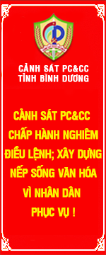
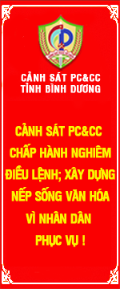

Giới thiệu chung
CẢNH SÁT PC&CC TỈNH BÌNH DƯƠNG
NHÌN LẠI SAU 03 NĂM THÀNH LẬP (26/8/2011-26/8/2014)
(Đại tá Nguyễn Văn Sơn- Giám đốc Cảnh sát PC&CC)
Ngày 30/12/2010, Thủ tướng Chính phủ ban hành Quyết định số 2434/QĐ-TTg về việc thí điểm thành lập Sở Cảnh sát PCCC (nay là Cảnh sát PC&CC) trực thuộc Bộ Công an tại 7 tỉnh, thành phố trực thuộc Trung ương gồm Hà Nội, Hải Phòng, Đà Nẵng, Cần Thơ, Đồng Nai, Bình Dương, Vĩnh Phúc. Thực hiện Quyết định của Thủ tướng, ngày 26/8/2011, Cảnh sát PC&CC tỉnh Bình Dương chính thức được thành lập và đi vào hoạt động với tổ chức bộ máy ban đầu gồm 9 đơn vị trực thuộc với 195 cán bộ chiến sĩ đến nay với 10 đơn vị trực thuộc và 538 cán bộ chiến sỹ. Với những khó khăn về cơ sở vật chất, biên chế, trang thiết bị, phương tiện , điều kiện sinh hoạt… với sự chỉ đạo của Lãnh đạo Bộ Công an, Tỉnh ủy, UBND tỉnh, sự đoàn kết thống nhất trong Đảng ủy, Ban Giám đốc, sự đồng tâm hiệp lực của tập thể, CBCS và sự hỗ trợ phối hợp của các ban ngành, đoàn thể, sau 3 năm thành lập, Cảnh sát PCCC tỉnh Bình Dương đã bước đầu khắc phục được những khó khăn khi mới thành lập, mô hình tổ chức dần hoàn thiện, mặt bằng trình độ của cán bộ chiến sĩ được nâng lên, cơ sở hạ tầng như trụ sở làm việc, doanh trại cũng như các thiết bị, phương tiên phục vụ công tác phòng cháy chữa cháy và cứu nạn cứu hộ được đầu tư. Trong công tác chuyên môn, lực lượng Cảnh sát phòng cháy và chữa cháy tỉnh đã tập trung triển khai nhiều biện pháp nghiệp vụ để tăng cường công tác phòng cháy chữa cháy, đấu tranh ngăn chặn cháy lan, cháy lớn nhằm góp phần tạo môi trường ổn định để các doanh nghiệp yên tâm sản xuất, đầu tư, phát triển kinh tế điều này đã khẳng định được sự trưởng thành và từng bước phát triển của Cảnh sát PC&CC tỉnh.
Hàng năm, Cảnh sát PC&CC tỉnh đều tham mưu Tỉnh ủy, UBND tỉnh Bình Dương ban hành các Chỉ thị tăng cường công tác PC&CC và CNCH trên địa bàn tỉnh. Thường xuyên tham mưu Tỉnh ủy, UBND tỉnh ban hành các văn bản chỉ đạo, điều hành về công tác PCCC&CNCH điển hình như sau: Công văn số 3078/UBND-NC ngày 25/10/2012 về việc tăng cường công tác PCCC tại các khu công nghiệp, chợ, trung tâm thương mại, bệnh viện, cơ sở kinh doanh xăng dầu, khí đốt hóa lỏng, cơ sở tàng trữ, sử dụng vật liệu nổ công nghiệp; Thành lập Ban chỉ đạo công tác PCCC&CNCH trên địa bàn tỉnh, Kế hoạch triển khai thực hiện Quyết định số 1110/QĐ-TTg ngày 17/8/2012 của Thủ tướng Chính phủ phê duyệt Quy hoạch tổng thể hệ thống cơ sở của lực lượng Cảnh sát PCCC&CNCH đến năm 2020 và tầm nhìn đến năm 2030, Quyết định số 44/2012/QĐ-TTg ngày 15/10/2012 của Thủ tướng Chính phủ Quy định về công tác cứu nạn, cứu hộ của lực lượng PCCC; Báo cáo Sơ kết 02 năm thực hiện Chỉ thị 1634/CT-TTg ngày 31/8/2010 của Thủ tướng Chính phủ về “Tăng cường chỉ đạo thực hiện một số nhiệm vụ cấp bách, trọng tâm trong công tác PCCC&CNCH”; Tổ chức ký kết 03 Quy chế phối hợp thực hiện về công tác PCCC với các đơn vị và các Ban quản lý Khu công nghiệp; Tổ chức nghiên cứu đề án “Xây dựng phương án phòng, chống sự cố cháy, nổ” trên địa bàn tỉnh (đề án này hoàn thành trong năm 2015); Xây dựng kế hoạch, phương án, kịch bản về tổ chức thực hành diễn tập phòng thủ dân sự có một phần thực binh tỉnh Bình Dương năm 2013 “BD-13” theo Kế hoạch số 2843/KH-UBND ngày 24/9/2013 của UBND tỉnh; Tham mưu UBND tỉnh ban hành Kế hoạch Ban chỉ đạo thực hiện chuyên đề huấn luyện nghiệp vụ cứu nạn, cứu hộ cho các lực lượng theo Quyết định số 44/2012/QĐ-TTg ngày 15/10/2012 của Thủ tướng Chính phủ Quy định về công tác cứu nạn, cứu hộ của lực lượng phòng cháy và chữa cháy; Quyết định số 1880/QĐ-UBND ngày 07/8/2014 kèm theo kế hoạch triển khai thi hành Luật sửa đổi, bổ sung một số điều của Luật PCCC trên địa bàn tỉnh Bình Dương.
Tính đến tháng 08/2014 toàn tỉnh có 3.580 cơ sở có nguy hiểm về cháy nổ trong đó có 03 kho xăng dầu với tổng trữ lượng 53.000m3; 293 trạm xăng dầu, 406 cửa hàng kinh doanh, khí đốt hóa lỏng; 4 kho chứa vật liệu nổ công nghiệp, 20 trạm biến áp từ 110 KV đến 500KV; 97 chợ, trung tâm thương mại; 60 nhà cao tầng; 305 khách sạn, nhà nghỉ …Ngoài ra Bình Dương còn có 01 ga hàng hóa đường sắt (ga Dĩ An – Sóng Thần), 3 cảng nội địa để vận chuyển hàng hóa trên tuyến sông Đồng Nai và sông Sài Gòn (Cảng Thạnh Phước – Thị xã Tân Uyên, Cảng Bà Lụa – TP Thủ Dầu Một, Công ty cổ phần cảng Bình Dương – Thị xã Dĩ An). Với những đặc thù về tự nhiên, kinh tế, xã hội như trên có thể khẳng định Bình Dương là địa bàn phức tạp về công tác phòng cháy chữa cháy và cứu nạn cứu hộ (PCCC và CNCH).
Thực hiện tốt phong trào toàn dân PCCC, Cảnh sát PC&CC tỉnh Phối hợp với các cơ quan tuyên truyền Báo Bình Dương, Đài Phát thanh – Truyền hình tỉnh mở chuyên mục “Phòng cháy chữa cháy trách nhiệm của toàn dân” phát trên sóng Phát thanh – Truyền hình Bình Dương hàng tháng (02 chuyên mục/01 tháng); với Sở Thông tin – Truyền thông tỉnh và các Đài Truyền thanh địa phương phát 42 phóng sự, đăng 285 tin bài về công tác PC&CC trên các phương tiện thông tin đại chúng; Hướng dẫn các cơ sở trọng điểm có nguy hiểm về cháy, nổ trên địa bàn tỉnh treo 4.179 băng rôn và gắn 132 pano khẩu hiệu tại các trục lộ giao thông chính của tỉnh để tuyên truyền công tác phòng cháy, chữa cháy hưởng ứng “Tuần lễ Quốc gia An toàn vệ sinh lao động – Phòng chống cháy, nổ”, “Ngày toàn dân phòng cháy chữa cháy – 4/10” hàng năm; xuất bản 500 cuốn tập san PCCC tỉnh và xây dựng 02 phóng sự tham gia liên hoan Truyền hình Công an nhân dân (đạt huy chương Bạc và được Bộ Công an tặng Bằng khen). Đã tổ chức ký 5.848 cam kết đảm bảo an toàn PCCC cho các chủ doanh nghiệp, hộ kinh doanh có điều kiện, tiểu thương kinh doanh trong các chợ…và phát hành 2.711 tờ rơi tuyên truyền công tác PCCC trên địa bàn tỉnh. Tổ chức 03 Hội thao PCCC có 119 đội, 1.208 vận động viên và hơn 2.000 cổ động viên tham gia. Tổ chức huấn luyện nghiệp vụ PCCC cho 3.106 cơ sở, có 97.518 người tham gia. Hàng năm đều mở các khóa huấn luyện nghiệp vụ chữa cháy, cứu nạn, cứu hộ cho CBCS tham gia học tập với 2 đợt trong năm, đảm bảo thời gian, nội dung huấn luyện theo quy định; kết quả mỗi đợt học, CBCS đạt tỷ lệ khá, giỏi cao (hơn 80%), không có CBCS học tập yếu kém.
Nâng cao hiệu lực quản lý nhà nước về công tác PCCC, theo đó đã kiểm tra an toàn PCCC 25.414 cơ sở, kiến nghị 122.898 thiếu sót về an toàn PCCC; lââp 3.271 biên bản xử lý vi phạm hành chính lĩnh vực PCCC với số tiền xử lý vi phạm là 7 tỷ 166 triệu đồng. Phối hợp cùng các cơ quan, ban, ngành chức năng trên địa bàn toàn tỉnh tiến hành kiểm tra liên ngành 69 lượt và phối hợp cùng Bộ Công an thanh tra việc chấp hành các quy định của pháp luật về PCCC các Khu công nghiệp trên địa bàn tỉnh. Cấp 5.637 giấy phép vận chuyển vật liệu nổ, 399 giấy đăng ký tiếp nhận vật liệu nổ công nghiệp. Thẩm duyệt thiết kế an toàn phòng cháy chữa cháy 1.531 hạng mục công trình xây dựng, nghiệm thu 1016 công trình đảm bảo an toàn phòng cháy chữa cháy; cấp giấy chứng nhận đủ điều kiện về an toàn PCCC cho 122 cơ sở và 478 giấy phép vận chuyển chất, hàng có nguy hiểm về cháy, nổ. Tiến hành thực tập 2.050 phương án chữa cháy, diễn tập 16 phương án phối hợp nhiều lực lượng. Điển hình phương án phòng thủ dân sự về xử lý tình huống giả định vỡ đập hồ Dầu Tiếng cứu nạn trên sông Sài Gòn; tình huống cứu sập do mưa bão tại công trình xây dựng bệnh viện đa khoa Mỹ Phước – Bến Cát trong nội dung diễn tập phòng thủ dân sự tỉnh “BD-13” do UBND tỉnh tổ chức
Công tác thường trực sẵn sàng chiến đấu luôn được duy trì, đảm bảo thường trực 24/24 giờ, sẵn sàng thực hiện nhiệm vụ khi có cháy, nổ xảy ra. Từ năm 2011 đến 08/2014 trên địa bàn tỉnh Bình Dương xảy ra 212 vụ cháy, thiệt hại về người: chết 13 người, bị thương 20 người; thiệt hại về tài sản ước tính 135 tỷ 823 triệu đồng. Đã tiến hành điều tra làm rõ 185 vụ, 29 vụ đang điều tra; nguyên nhân: chập điện 106 vụ (chiếm 50%); bất cẩn 45 vụ (chiếm 21%), sự cố kỹ thuật 21 vụ (chiếm 10%), mâu thuẫn 01 vụ (chiếm 0.47%), bệnh tâm thần 01 vụ (chiếm 0.47%); sang chiết gas trái phép 01 vụ (chiếm 0.47%); tự đốt 01 vụ (chiếm 0.47%). So với cùng kỳ (từ năm 2008 đến 2010) số vụ cháy giảm 23 vụ, số người chết giảm 11 người, bị thương giảm 6 người; thiệt hại về tài sản giảm 12 tỷ 796 triệu đồng. Kịp thời triển khai lực lượng, phương tiện cứu nạn 28 vụ, cứu hộ 03 vụ, cứu an toàn 105 nạn nhân, tìm 15 xác nạn nhân; tài sản cứu được ước tính khoảng 700 triệu đồng.
Nâng cao năng lực lãnh đạo, sức chiến đấu của các tổ chức cơ sở Đảng và chất lượng đội ngũ Đảng viên của Đảng bộ, theo đó tập trung kiện toàn tổ chức Đảng và quan tâm công tác phát triển đảng viên, từ 9 chi bộ với 105 đảng viên khi mới thành lập đến nay nâng tổng số lên 10 chi bộ với 244 đảng viên trực thuộc Đảng bộ Cảnh sát PC&CC. Về tổ chức, bộ máy qua 3 năm hoạt động, hiện Cảnh sát PC&CC tỉnh có 10 đơn vị trực thuộc gồm 5 phòng địa phương và 5 phòng nghiệp vụ, có 45 đội với tổng quân số 538 CBCS (tăng 180,7%), trong đó lãnh đạo cấp phòng là 37 đ/c (tăng 76,19 %), chỉ huy cấp đội 44 đồng chí (tăng 76%), đội ngũ cán bộ lãnh đạo chỉ huy luôn được quan tâm bổ sung kịp thời nhằm đáp ứng về số lượng, trình độ, năng lực điều hành và thực thi nhiệm vụ tại các đơn vị. Ngoài ra công tác đào tạo, bồi dưỡng nâng cao trình độ chuyên môn, nghiệp vụ, lý luận chính trị cho cán bộ chiến sĩ luôn được Ban Giám đốc quan tâm chỉ đạo. Thường xuyên tổ chức cho cán bộ tham gia các lớp đào tạo ngắn hạn, dài hạn; đặc biệt quan tâm bồi dưỡng cho đội ngũ lãnh đạo chỉ huy và các đồng chí trong diện quy hoạch đạt chuẩn chức danh theo quy định.
Về dự án xây dựng và nâng cấp sửa chữa, với sự quan tâm đầu tư của Bộ Công an và nguồn kinh phí địa phương hỗ trợ hàng năm, hiện Cảnh sát PC&CC tỉnh đã đưa vào sử dụng 11 công trình, phần lớn là công trình sửa chữa, có 2 dự án chuyển tiếp từ Công an tỉnh bàn giao là Trụ sở làm việc Phòng Cảnh sát PCCC số 5 và Phòng Cảnh sát PCCC số 4 tại Bàu Bàng. Về phương tiện chữa cháy, cứu nạn, cứu hộ được trang bị 41 xe các loại phục vụ công tác chữa cháy và cứu nạn cứu hộ, 26 xe chữa cháy, 03 xe thang, 03 xe cứu hộ, 1 xe tiếp nước, 01 xe trạm bơm, 06 xe chở phương tiện, xe thang cứu hộ đa năng.
Cảnh sát Phòng cháy và chữa cháy tỉnh được thành lập thể hiện sự quan tâm của Đảng, Nhà nước, Bộ Công an, Tỉnh ủy, Ủy ban nhân dân tỉnh đối với công tác phòng cháy chữa cháy tại địa phương đồng thời cũng khẳng định công tác phòng cháy chữa cháy đã được coi trọng tương xứng trong sự nghiệp phát triển kinh tế – xã hội của tỉnh Bình Dương nói riêng và của đất nước nói chung. Qua 3 năm thành lập, được sự quan tâm hỗ trợ về nhiều mặt của lãnh đạo Bộ Công an, Tỉnh ủy, UBND tỉnh nên các hoạt động của Cảnh sát PC&CC tỉnh từng bước được ổn định và đi vào nề nếp. Các đơn vị trực thuộc bám sát chức năng nhiệm vụ được Bộ Công an quy định và chỉ đạo của Ban Thường vụ Đảng ủy, Ban Giám đốc đã làm tốt chức năng tham mưu trên lĩnh vực phòng cháy chữa cháy và cứu nạn cứu hộ, qua đó đã tạo được sự chuyển biến mạnh mẽ ý thức phòng cháy chữa cháy của người dân nhất là người đứng đầu các cơ quan, tổ chức và hộ gia đình, phong trào toàn dân phòng cháy chữa cháy được nâng cao; Công tác xử lý vi phạm hành chính trong phòng cháy chữa cháy, công tác cải cách thủ tục hành chính…. được chú trọng thực hiện đã góp phần hạn chế số vụ cháy và thiệt hại do cháy gây ra. Qua đó đã có 161 lượt tập thể và 1.303 lượt cá nhân được các cấp khen thưởng, trong đó: Chủ tịch nước tặng huân chương cho 2 cá nhân, tặng Huy chương cho 129 cá nhân; Bộ Công an tặng Bằng khen cho 32 lượt tập thể và 30 lượt cá nhân; Tổng cục VII-BCA tặng Giấy khen 04 lượt tập thể và 06 lượt cá nhân; UBND tỉnh Bình Dương tặng bằng khen 21 lượt tập thể và 36 lượt cá nhân; Tập Đoàn Công nghiệp cao su Việt Nam tặng Bằng khen cho 02 tập thể; Giám đốc tặng Giấy khen 84 lượt tập thể và 396 lượt cá nhân. Bộ Công an tặng Cờ thi đua vì an ninh tổ quốc cho 03 tập thể, tặng danh hiệu chiến sỹ thi đua cơ sở cho 03 lượt cá nhân; Giám đốc tặng danh hiệu thi đua “Vì an ninh Tổ Quốc” cho 06 lượt tập thể đạt danh hiệu đơn vị “Quyết thắng”, 09 lượt tập thể đạt danh hiệu đơn vị tiên tiến và 73 lượt cá nhân đạt danh hiệu chiến sỹ thi đua cơ sở, 628 lượt cá nhân đạt danh hiệu chiến sĩ tiến tiến.
Phát huy những thành tích đã đạt được và để tiếp tục thực hiện có hiệu quả nhiệm vụ công tác PCCC trong thời gian tới, Cảnh sát PC&CC tỉnh Bình Dương tập trung lãnh đạo, chỉ đạo tổ chức thực hiện tốt một số nội dung sau:
Một là: Tiếp tục tăng cường công tác giáo dục chính trị tư tưởng đối với cán bộ chiến sỹ trong toàn lực lượng, thực hiện tốt Chỉ thị 03 của Bộ Công an tiếp tục siết chặt kỷ luật, kỷ cương, điều lệnh, xây dựng nếp sống văn hóa vì nhân dân phục vụ gắn với thực hiện Nghị quyết TW4 “Một số vấn đề cấp bách về xây dựng đảng hiện nay”, học tập thực hiện tư tưởng tấm gương đạo đức Hồ Chí Minh, 6 điều Bác Hồ dạy Công an nhân dân, 4 điều Bác dạy đối với lực lượng PCCC.
Hai là: Đẩy mạnh phong trào toàn dân tham gia PCCC, chủ động phối hợp các cấp, các ngành tuyên truyền, giáo dục, phổ biến pháp luật và kiến thức về PCCC cho cán bộ và nhân dân, gắn nội dung tuyên truyền về PCCC với các cuộc vận động, phong trào thi đua khác; xây dựng các phóng sự phản ánh về thực trạng công tác PCCC và các biện pháp giải quyết PCCC có hiệu quả; kịp thời phát hiện, biểu dương về gương người tốt, việc tốt, để phong trào toàn dân PCCC từng bước đi vào chiều sâu, tạo thói quen và ý thức cho cán bộ, người dân trong công tác PCCC.
Ba là: Nâng cao tinh thần trách nhiệm, chủ động tham mưu cấp ủy, chính quyền các cấp chỉ đạo tăng cường quản lý nhà nước về PCCC có hiệu quả; tăng cường kiểm tra công tác PCCC đối với các cơ quan tổ chức, đơn vị cơ sở, khu dân cư, rừng, nhất là ở những nơi trọng điểm về PCCC đề ra biện pháp chủ động phòng ngừa hạn chế thấp nhất cháy nổ xảy ra; xây dựng, bổ sung hoàn thiện các phương án chữa cháy, cứu nạn, cứu hộ, nhất là các phương án có huy động nhiều lực lượng, phương tiện tham gia và tổ chức chỉ đạo thực tập phương án nhằm chuẩn bị sẵn sàng mọi điều kiện để khi có cháy bảo đảm dập tắt kịp thời, có hiệu quả.
Bốn là: Tăng cường đầu tư cho công tác phòng cháy với mục tiêu nhằm nâng cao năng lực cho lực lượng cảnh sát PCCC và cứu nạn, cứu hộ, xây dựng lực lượng này thực sự là lực lượng tinh nhuệ, chính quy và từng bước hiện đại, đủ sức hoàn thành nhiệm vụ công tác PCCC, đáp ứng tốt nhiệm vụ phòng ngừa, chữa cháy, cứu nạn, cứu hộ.
Năm là: Tiếp tục kiện toàn tổ chức bộ máy, đổi mới phương pháp lãnh đạo chỉ huy, coi trọng công tác xây dựng lực lượng, xây dựng Đảng, Đoàn, Hội theo tiêu chí đơn vị Cảnh sát PC&CC “Chủ động, kỷ cương, trách nhiệm, hiệu quả” góp phần bảo vệ sự nghiệp hóa, hiện đại hóa, phát triển kinh tế xã hội của địa phương.